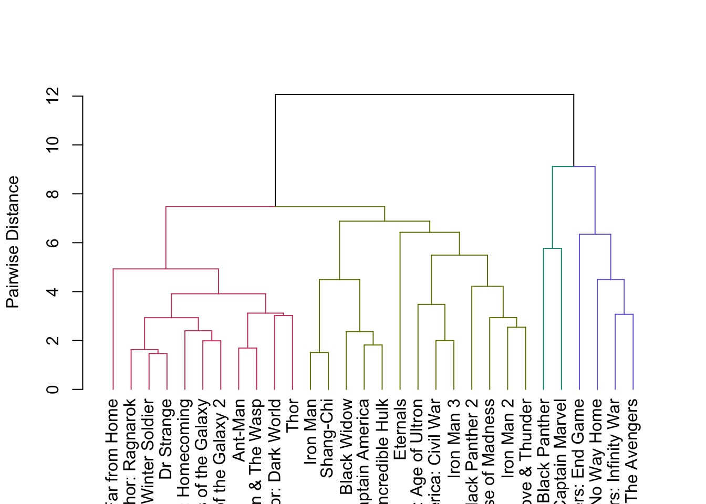

library(tidyverse)
mcu_movies <- read_csv("https://raw.githubusercontent.com/ryurko/DataViz-Class-Data/main/mcu_movies.csv")Demo 07: More MDS and Creating Dendrograms
The graphs below don’t have proper titles, axis labels, legends, etc. Please take care to do this on your own graphs.
MDS meets MCU
We will work with a dataset about the performance of MCU movies. The dataset was accessed from here with information such as the box office performance and reviews.
Here is the code to read in the data into R:
For this demo, we’ll focus just on the columns that contain quantitative variables about the movies’ performance, but we’ll also exclude the year variable:
# Select only the continuous variables excluding the year
mcu_quant <- mcu_movies |>
dplyr::select(-c(film, category, year))There are 15 measurements about each movie:
head(mcu_quant)# A tibble: 6 × 15
worldwide_gross_m percent_budget_recovered critics_percent_score
<dbl> <dbl> <dbl>
1 518 398 83
2 623 479 87
3 1395 382 76
4 2797 699 94
5 2048 683 85
6 1336 668 96
# ℹ 12 more variables: audience_percent_score <dbl>,
# audience_vs_critics_percent_deviance <dbl>, budget <dbl>,
# domestic_gross_m <dbl>, international_gross_m <dbl>,
# opening_weekend_m <dbl>, second_weekend_m <dbl>,
# x1st_vs_2nd_weekend_drop_off <dbl>,
# percent_gross_from_opening_weekend <dbl>,
# percent_gross_from_domestic <dbl>, …We’re interested in the questions: which of these movies are most similar, and which are most different?
We’re going to follow our workflow from the previous demo and first compute the distance matrix for the movies (based on Euclidean distance), followed by performing multi-dimensional scaling (MDS) to see which movies are “close” and which are “far apart”.
First, scale the data and then compute the distance matrix:
# This is just one way to scale the data - without centering the columns
mcu_quant <- apply(mcu_quant, MARGIN = 2,
FUN = function(x) x / sd(x))
mcu_dist <- dist(mcu_quant)Staring at a distance matrix and trying to find the most/least similar pairs of observations is not practical for large datasets. This is why an approach like MDS can be really useful: We can quickly see which movies are “close” and which are “far apart” by plotting the first two coordinates (using k = 2). In the code chunk below, we run MDS to get the two new coordinates, then add these coordinates as columns to the original dataset for plotting purposes:
# Run MDS
mcu_mds <- cmdscale(d = dist(mcu_quant), k = 2)
# Add to original dataset
mcu_movies <- mcu_movies |>
mutate(mds1 = mcu_mds[,1],
mds2 = mcu_mds[,2])
# Create plot:
mcu_movies |>
ggplot(aes(x = mds1, y = mds2)) +
geom_point(alpha = .5) +
labs(x = "MDS Coordinate 1", y = "MDS Coordinate 2") +
theme_bw()Since this dataset is relatively small, I can instead plot the film titles directly using geom_text() where I just need to map the film variable to the label aesthetic of the plot:
mcu_movies |>
ggplot(aes(x = mds1, y = mds2)) +
# Use text labels instead of points:
geom_text(aes(label = film),
alpha = .75) +
labs(x = "MDS Coordinate 1", y = "MDS Coordinate 2") +
theme_bw()Now I can see where the movies fall in this projection. If you know anything about the MCU, you can see that some of the biggest movies are along the right-hand side: Black Panther, The Avengers, Spider-Man: No Way Home, Avengers: Infinity War, and Avengers Endgame. We see the various other movies throughout, including the definitive worst MCU movie on the bottom-left corner, as well as a compact group of several movies together.
Visualizing distance structure with hierarchical clustering and dendrograms
While this MDS plot is useful for visualizing how the movies relate to each other. However, it can be difficult to imagine how we could use the MDS plot to identify clusters of movies (unless the points themselves were already clearly clustered, which they are not in the above plot). This is where dendrograms can be a great visual tool for understanding the clustering of observations in your dataset.
Dendrograms are tree-like structures used for visualizing distances. Dendrograms have the following axes:
y-axis: distance (or more generally speaking: dissimilarity) at which a pair of observations are linked
x-axis: rough grouping of observations (the exact ordering is not necessarily meaningful, other than the fact that pairs of observations near each other are being assigned to the same cluster)
Below, we implement hierarchical clustering with complete linkage and single linkage (complete linkage is more commonly used), and then plot the results on a dendrogram. We use the hclust function in R to perform hierarchical clustering (the default method is complete linkage) given a distance matrix (or in more general terms, a dissimilarity matrix).
I’ll first start with complete linkage:
hc_complete <- hclust(mcu_dist, method = "complete")
plot(hc_complete, ylab = "Pairwise Distance",
main = "Complete Linkage", xlab = "MCU Movies")From looking at this dendrogram, we can broadly see a group of movies on the right-hand side that are separate from most of the other movies. However, the movies are labeled by their row numbers which is useless for us! We can update the leaf labels by modifying the labels input for the hclust plot object. For example, I can instead label the movies with the actual film titles:
plot(hc_complete, ylab = "Pairwise Distance",
labels = mcu_movies$film,
main = "Complete Linkage", xlab = "MCU Movies")This is much more useful! I can now see that the group of movies on the right-hand side correspond to the biggest one I previously mentioned, as well as Captain Marvel. From this figure, we can now see which pairs of movies were most similar such as Ant-Man and its sequel, along with Thor and its first sequel (both of which are not great…).
NOTE: This is a small enough dataset that labeling the leaves is worthwhile, but for larger datasets the labels can become problematic and unreadable. Instead, you can also turn off the leaf labels by just setting label to FALSE:
plot(hc_complete, ylab = "Pairwise Distance",
labels = FALSE,
main = "Complete Linkage", xlab = "MCU Movies")While the above was with complete linkage, the following demonstrates the results with single linkage:
hc_single <- hclust(mcu_dist, method = "single")
plot(hc_single, ylab = "Pairwise Distance",
labels = mcu_movies$film,
main = "Single Linkage", xlab = "MCU Movies")In this case, we can clearly see a very different looking dendrogram driven by the difference in how we compute distances between clusters. Single linkage results in this chaining effect: where poorly separate but distinct clusters are merged together.
Alternatively, because base R plotting is pretty annoying at times, we can instead use the ggdendro package to create our dendrogram. This offers more customization and even allows you to extract a dataset constructed by the dendrogram for use - but we won’t focus on that for this demo. Instead the following code uses the ggdendro package to create two dendrograms and then plots them side-by-side using the patchwork package (which I have previously used in various solutions):
# You'll need to run the following lines if you do NOT have ggdendro and patchwork
# packages installed already:
# install.packages("ggdendro")
# install.packages("patchwork")
library(ggdendro)
library(patchwork)Warning: package 'patchwork' was built under R version 4.2.3hc_single_ggdendro <- ggdendrogram(hc_single, theme_dendro = FALSE) +
labs(y = "Pairwise Distance", title = "Single Linkage") +
theme_bw() +
# Remove the x-axis title
theme(axis.title.x = element_blank())
hc_complete_ggdendro <- ggdendrogram(hc_complete, theme_dendro = FALSE) +
labs(y = "Pairwise Distance", title = "Complete Linkage") +
theme_bw() +
# Remove the x-axis title
theme(axis.title.x = element_blank())
hc_single_ggdendro + hc_complete_ggdendroIf we want to add the movie titles to the ggdendro version of the dendrogram, we unfortunately we need to go back to the beginning of this process! We need to add rownames to our initial dataset that we used for computing the distance matrix. These names will then automatically carry over and serve as the observation labels in the dendrograms above:
# Add the film titles as the row names for mcu_quant
rownames(mcu_quant) <- mcu_movies$film
# Recompute the distance matrix
mcu_dist <- dist(mcu_quant)
# And repeat the dendrogram process
hc_complete <- hclust(mcu_dist, method = "complete")
ggdendrogram(hc_complete, theme_dendro = FALSE) +
labs(y = "Pairwise Distance", title = "Complete Linkage") +
theme_bw() +
# Remove the x-axis title
theme(axis.title.x = element_blank())But now we can’t read any of the labels! Conveniently, since ggdendro returns a ggplot object, we can just use coord_flip() to make this easier to read:
hc_complete_ggdendro <- ggdendrogram(hc_complete, theme_dendro = FALSE) +
labs(y = "Cluster Dissimilarity (based on complete linkage)",
title = "Which MCU movies are similar to each other?") +
coord_flip() +
theme_bw() +
# Remove the y-axis title (changed from x to y since we flipped it!)
theme(axis.title.y = element_blank())
# Display this:
hc_complete_ggdendroIt can also be helpful to put an MDS plot and a dendrogram plot side-by-side (again using patchwork). The MDS plot gives us a better idea of what the dendrogram is doing behind the scenes (think about why).
mcu_mds_plot <- mcu_movies |>
ggplot(aes(x = mds1, y = mds2)) +
geom_text(aes(label = film),
alpha = .75) +
labs(x = "MDS Coordinate 1", y = "MDS Coordinate 2") +
theme_bw()
mcu_mds_plot + hc_complete_ggdendroUsing our dendrogram, we can assign MCU movies to clusters by cutting the tree via the cutree function. In terms of code, there are two ways to do this: (1) we pick the height of the tree to cut at or (2) we tell it how many clusters we want and it finds the corresponding height to use.
Let’s start with cutting based on the height. From looking at the dendrogram above, I decide to break the movies into clusters based on a threshold of 10, i.e., if the complete linkage distance is \(\leq 10\) then the clusters are merged together while anything above that threshold is in a different cluster.
If I call this cutree function at height h = 10 , you’ll see how it returns arbitrary labels to each movie:
mcu_clusters <- cutree(hc_complete, h = 10)
mcu_clusters Ant-Man Ant-Man & The Wasp
1 1
Avengers: Age of Ultron Avengers: End Game
1 2
Avengers: Infinity War Black Panther
2 2
Black Panther 2 Black Widow
1 1
Captain America Captain America: Civil War
1 1
Captain America: Winter Soldier Captain Marvel
1 2
Dr Strange Dr Strange: Multiverse of Madness
1 1
Eternals Guardians of the Galaxy
1 1
Guardians of the Galaxy 2 Incredible Hulk
1 1
Iron Man Iron Man 2
1 1
Iron Man 3 Shang-Chi
1 1
Spider-Man: Far from Home Spider-Man: Homecoming
1 1
Spider-Man: No Way Home The Avengers
2 2
Thor: Dark World Thor: Love & Thunder
1 1
Thor: Ragnarok Thor
1 1 This returns a vector of cluster assignments for every movie (where the names of the vector are the film titles). NOTE: The numbers are arbitrary labels without meaninful order! You could replace all the 1s with Zs and all of the 2s with As, and the meaning would be the same. All that matters is which observations have the same labels. I can now add these labels to be another column for my plot above to display what the clusters are via color while denoting the height at which I cut the dendrogram:
cluster_mcu_mds_plot <- mcu_movies |>
mutate(cluster = as.factor(mcu_clusters)) |>
ggplot(aes(x = mds1, y = mds2,
color = cluster)) +
geom_text(aes(label = film),
alpha = .75) +
labs(x = "MDS Coordinate 1", y = "MDS Coordinate 2") +
theme_bw() +
theme(legend.position = "bottom")
# Update dendogram with cut:
cut_dendro <- hc_complete_ggdendro +
# This is a horizontal line since its considered before the flip:
geom_hline(yintercept = 10, linetype = "dashed",
color = "darkred")
cluster_mcu_mds_plot + cut_dendroOther dendrogram visualization tools
dendextend
We’ll learn how to make prettier versions of this in a later lab. In particular, we’ll use the dendextend package (which you’ll have to install). This allows you to prespecify \(k\) the clusters displayed via color that you want to add to your dendrogram:
# Install dendextend if you do not have it already!
# install.packages("dendextend")
library(dendextend)
hc_dendrogram <- as.dendrogram(hc_complete)
hc_dendrogram <- set(hc_dendrogram,
"branches_k_color", k = 4)
plot(hc_dendrogram, ylab = "Pairwise Distance")
Check this page out for a simple tutorial of customizing dendrograms in R using ggdendro and dendextend.
factoextra
Another package with dendrogram visualizations, that we’ll use later on for PCA, is the factoextra package. This package contains many extremely useful functions for creating visualizations without too many steps. We can use the fviz_dend() function to display the dendrogram for an hclust object:
# Install factoextra if you do not have it already!
library(factoextra)Welcome! Want to learn more? See two factoextra-related books at https://goo.gl/ve3WBafviz_dend(hc_complete)Warning: The `<scale>` argument of `guides()` cannot be `FALSE`. Use "none" instead as
of ggplot2 3.3.4.
ℹ The deprecated feature was likely used in the factoextra package.
Please report the issue at <https://github.com/kassambara/factoextra/issues>.We can customize this in pretty easy ways, such as changing the font size via the cex argument and displaying clusters via color:
fviz_dend(hc_complete, cex = 0.25, k = 3, color_labels_by_k = TRUE) Check out the function documentation for more customization options: https://rpkgs.datanovia.com/factoextra/reference/fviz_dend.html